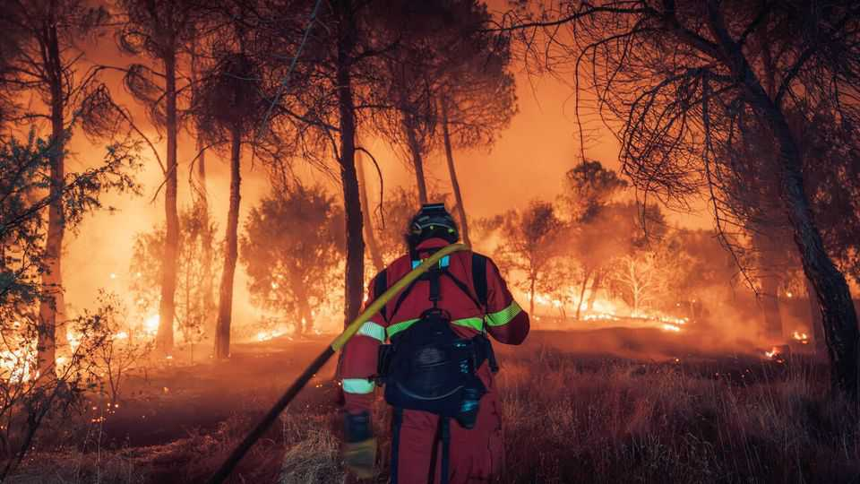
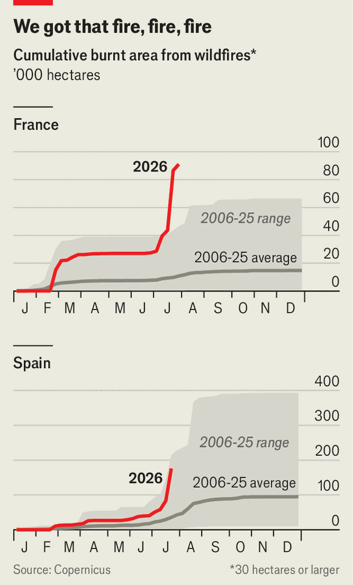
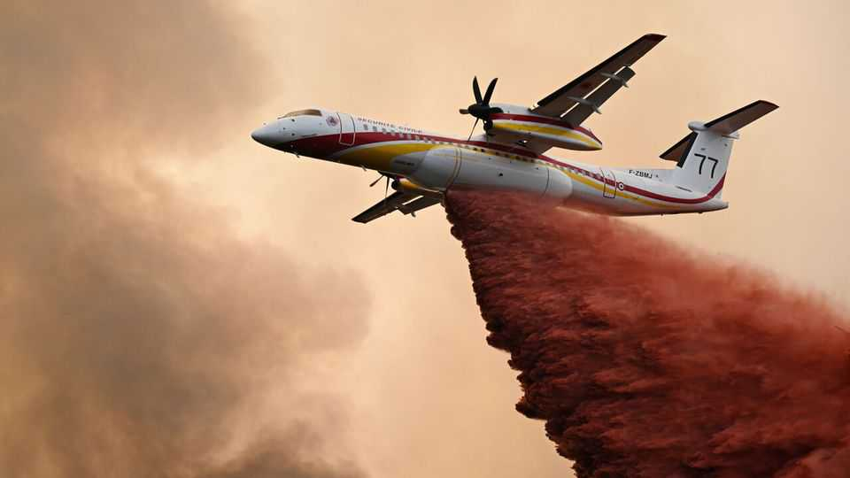
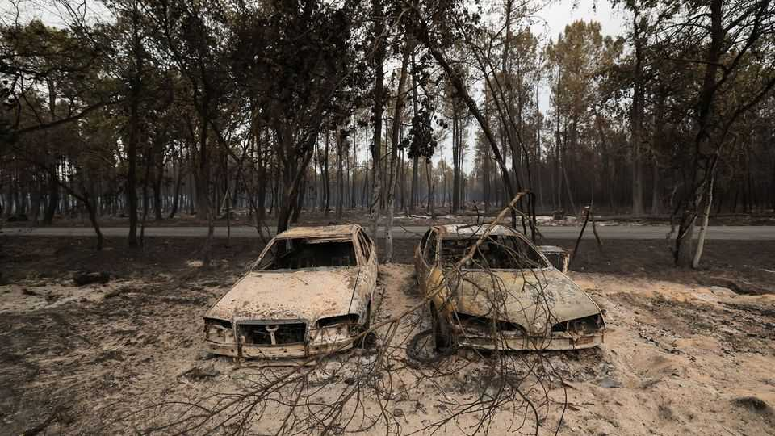

France and Spain are suffering their biggest wildfires on record
Bordeaux is on alert, and worse is yet to come

Jul 30th 2026
France is facing the “toughest situation since the second world war”, declared Emmanuel Macron on July 27th on a visit to firefighters in the Gironde area around Bordeaux. He was referring to the scale of the wildfires, but at times it felt as if he was referring to a crisis of any sort. Even in a country well used to rebellion and riot his words felt only slightly excessive. Images of the wildfires that began five days earlier in one of south-west France’s most forested areas have shaken the country. Firefighters called the scenes apocalyptic and Dantesque. The area destroyed, 42,000 hectares, is four times the size of Paris. Over 200,000 people have been evacuated. A week after they broke out, the fires were still not under control and were just 15km from the city of Bordeaux itself.
The wildfires started in the village of Saumos, west of Bordeaux, possibly when a motorised device used for brush-clearing caught alight. That they spread so fast was the result of exceptional conditions. In June and July France had two canicules, or spells of extreme heat, with temperatures at 40°C and above; this parched the land and turned pine forests into tinder. At one point intense heat created a weather phenomenon known as pyrocumulonimbus, whereby smoke from the fire generated its own thunderclouds and lightning that struck the ground and set off new fires. France has never witnessed one before.
The evacuations have been anguished but orderly. Despite traffic jams on the narrow Cap Ferret peninsula, motorists were able to leave; others were evacuated by boat. Some 7,000 people have been housed on camp beds in a vast exhibition hall, thanks to the Bordeaux town hall. Thomas Cazenave, the mayor, told evacuees the shelter was temporary and that they would be given beds in student accommodations or rooms offered by volunteers. Some will not be returning home at all. In the village of Le Porge, 183 homes were burnt to the ground; twisted remains of bicycles and garden chairs lay beside the ruins.
Neighbouring Spain has been hit just as hard. In early July, 14 people were killed by a swift conflagration in a village in Almería province. Later in the month, two wildfires in Ávila province and the Madrid region merged into the country’s biggest-ever blaze, destroying 77,000 hectares, more even than in France. A further 9,300 have burned near Valencia. On July 24th a large plume of smoke was visible from central Madrid; the fire threatened a 16th-century monastery at El Escorial before the wind mercifully changed direction.

Visiting Ávila on July 26th, Pedro Sánchez, the prime minister, warned of “complex hours ahead”. Two days of lower temperatures and lighter winds then helped thousands of firefighters bring the flames under control. Around 100,000 people were evacuated or told to stay put, with only one further fatality. Yet the fires are far from over. Spain’s fourth heatwave of the summer began on July 29th. It will bring a return of the “30/30/30” conditions that firefighters dread: temperatures of above 30°C, less than 30% humidity and winds over 30kph. Throw in an exceptionally wet spring that increased vegetation and a bone-dry early summer that dried it out, and Spain has become a tinder box.
In some respects, the wildfires have shown off effective crisis management. In France, firefighting protocols are well-known and practised. The country has a fleet of Canadair water-dropping aircraft and a huge reserve of 200,000 volunteer firefighters, who make up 78% of all firefighters. An Airbus A400M military plane was used for firefighting for the first time, using special kit to drop 20 tonnes of retardant. Farmers towing water cisterns joined convoys of rescue vehicles. Mr Macron activated the EU’s civil-protection mechanism; firefighting aircraft and vehicles poured in, not just from union members such as Sweden, Germany, Portugal and Slovakia, but from non-members Turkey and Switzerland.

In Spain, there has been little of the political bickering that often disfigures disaster response. Madrid’s conservative-run regional government quickly got Mr Sánchez’s Socialist-led administration to declare a national emergency. The Interior Ministry took charge of an impressive firefighting effort, which has blended regional forces, the army and volunteers.
Yet the disaster has also exposed shortcomings in both countries, not least the difficulty of planning for what has until now been judged a low-probability event. France's 12 Canadairs, eight Dash aircraft, six Air Tractors and about 30 firefighting helicopters suffice in a normal year, especially when supported by other EU countries. But opposition politicians, including from Marine Le Pen’s populist-right National Rally, have rounded on the government for not buying more and sooner. A new batch of Canadairs is due to be delivered in 2028 at the earliest. As for Spain, only seven of the government’s 14 Canadairs are operational, although allies loaned six more.

The new generation of blazes, fired by climate change and variations in land use, are of almost uncontrollable ferocity—and are getting closer to cities. In Spain rural depopulation means less attention is paid to forest management. Regional governments slashed spending on fire prevention after the great recession, and it has yet to recover. Eduardo Tolosana, president of the national association of forestry engineers, told El Mundo that Spain needs more cleared strips around housing estates, more evacuation routes and hydrants and active forest management.
As he visited the sites of fires this week, Mr Sánchez called for a national pact against climate change. He knows that some on the right are climate deniers. But he is not a consensus-builder.
When the flames recede, France and Spain will have to reassess the risks. In France the area destroyed so far this year, around 115,000 hectares, is nearly twice the most recent peak in a whole year, in 2022. Wildfires have broken out not only in southern forests known to be at risk but in places like Fontainebleau, outside Paris. In Spain the damaged area stands at 170,000 hectares, more than six times the figure for the same period last year. The summer’s drama is far from over: the city of Bordeaux remains on high alert, and both countries are bracing for fresh heatwaves. With every year, such blazes become less an exception and more the rule. ■